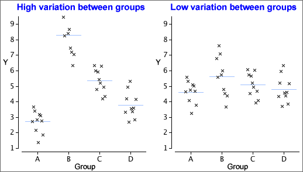

Comparing several groups
A new approach is needed to compare the means of three or more groups — the methods for two groups cannot be extended. We again assume a normal model with equal standard deviations,
| Group i: | Y ~ normal (µi , σ) |
Testing whether there are differences between the groups involves the hypotheses,
H0 : µi = µj for
all i and j
HA: µi ≠ µj for
at least some i, j
Variation between and within groups
Testing whether the model means, {µi}, are equal is done by assessing the variation between the group means in the data. However, because of randomness in sample data, the means are unlikely be the same, even if H0 is true.
In the example on the left below, the group means vary so much that the {µi} are almost certainly not equal. However the group means on the right are relatively similar and their differences may simply be randomness.

To assess whether the means are 'unusually different', we must also take account of the variation within the groups. The data set on the left below gives much stronger evidence of group differences than that on the right, even though the group means are the same in both data sets.
The evidence against H0 depends on the relative size of the variation within groups and between groups.